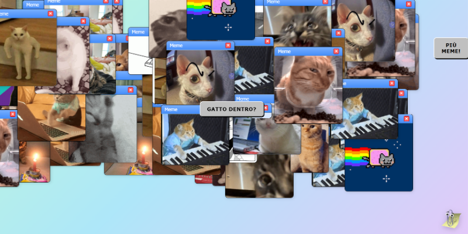
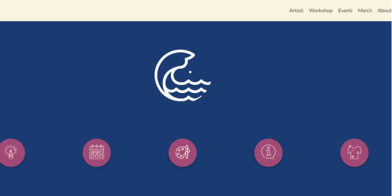
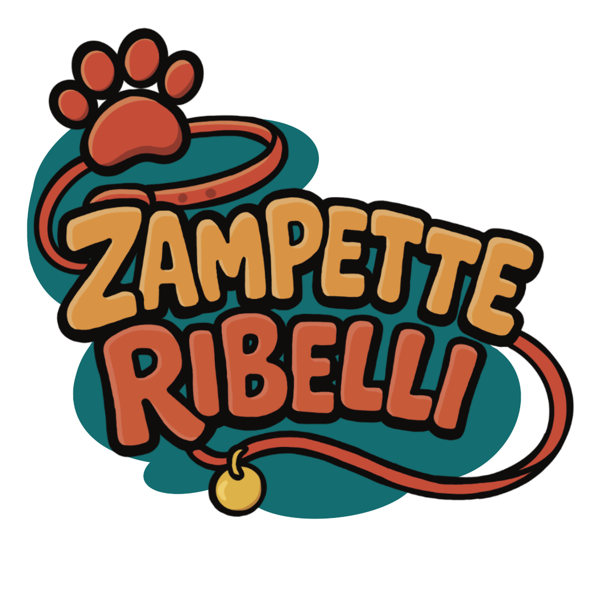
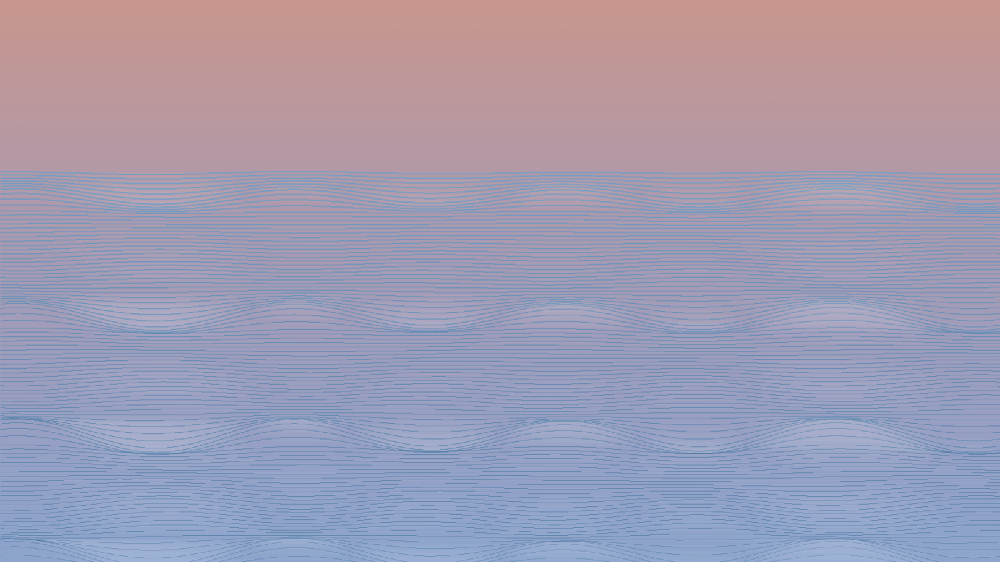
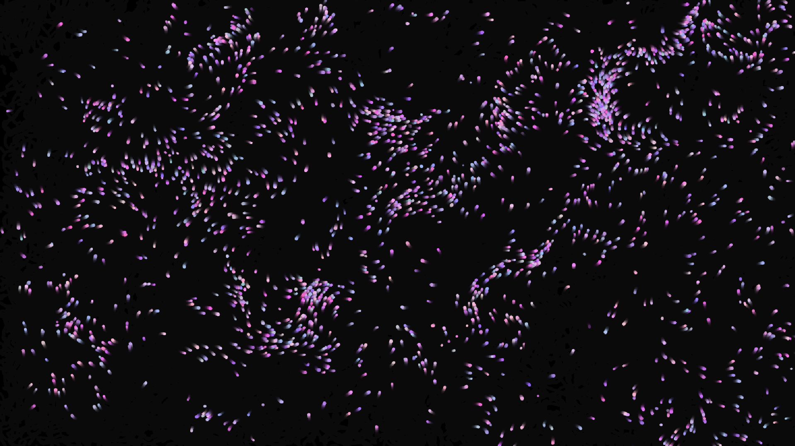
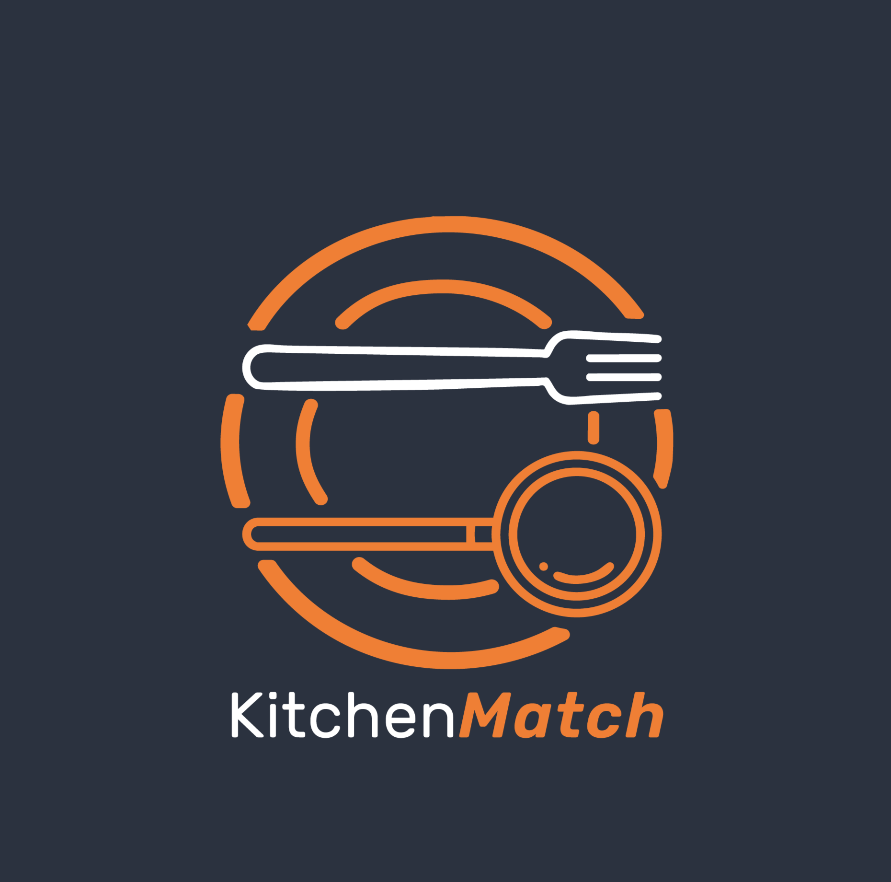

A random cat meme generator. My thesis project, exploring both the cultural impact of memes and modern web architecture.

Informational website for an art collective, featuring an e-commerce platform, official artist projects, and an events calendar.

A videogame developed for a Computer Games exam, featuring original illustrations, storyline, and UI/UX layout.

A video created with Processing, exploring generative art structures. The project is based on 24 hours of shared daily life with an elderly woman from Southern Salento.

Generative visuals in Processing with meditative audio. A digital projection where light particles emerge, move, and dissolve, following the rhythmic breath of the sound.

Research and design process for a food-service app. The project includes UI/UX prototyping in Figma, along with the creation of the brand and corporate identity.
I am a student passionate about illustration and web design. Curious, precise, and creative, I enjoy challenging myself through both individual and group projects to constantly grow. I studied at the Liceo Delfico Montauti and am currently attending the Academy of Fine Arts in Urbino, specializing in graphic design, photography, video editing, and new technologies for the arts.
Through my projects, I strive to merge aesthetics and functionality, creating simple yet engaging web experiences. I am passionate about illustration, photography, and everything related to visual communication. I enjoy experimenting, combining curiosity with precision, and taking on new challenges.